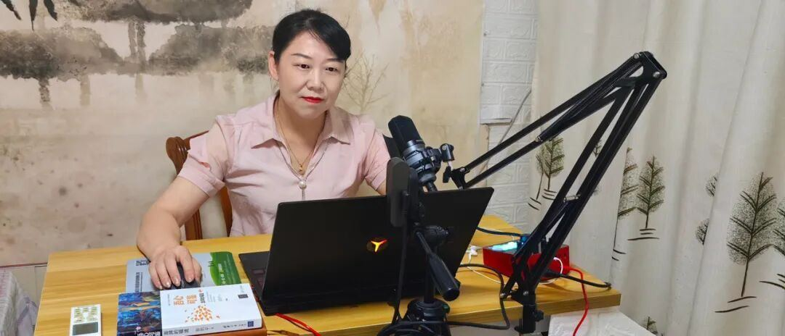
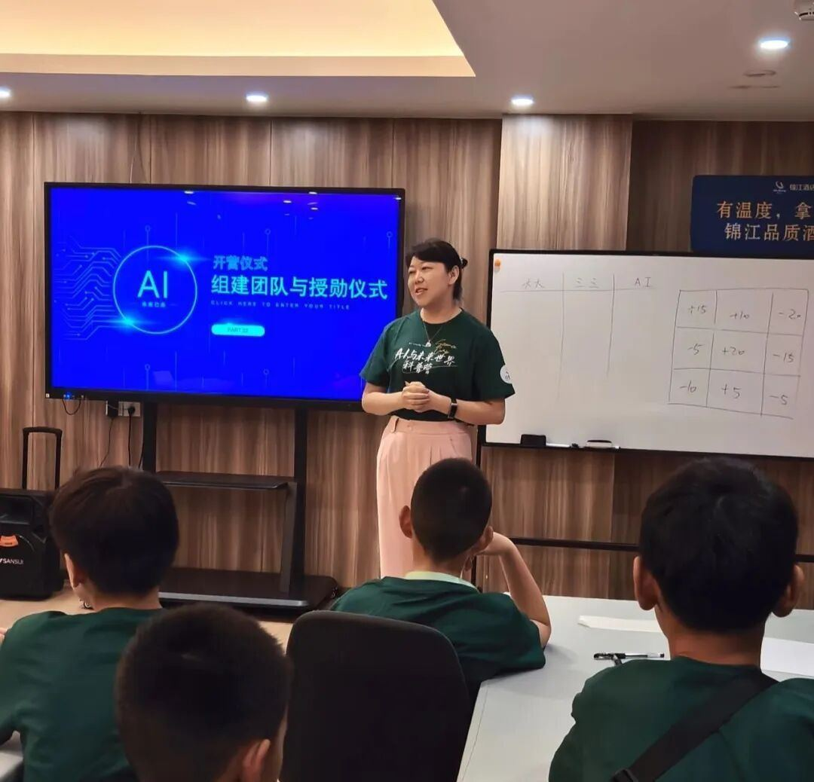
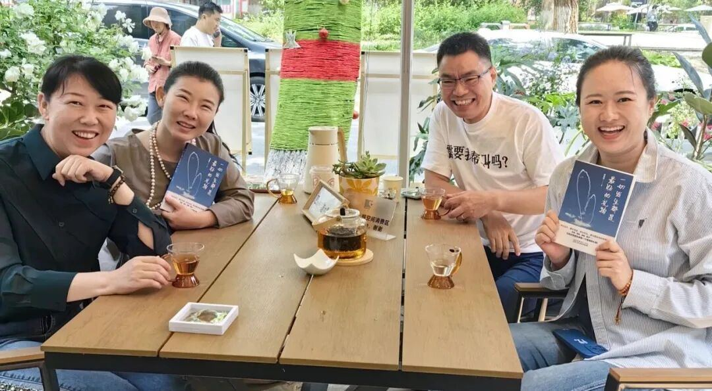
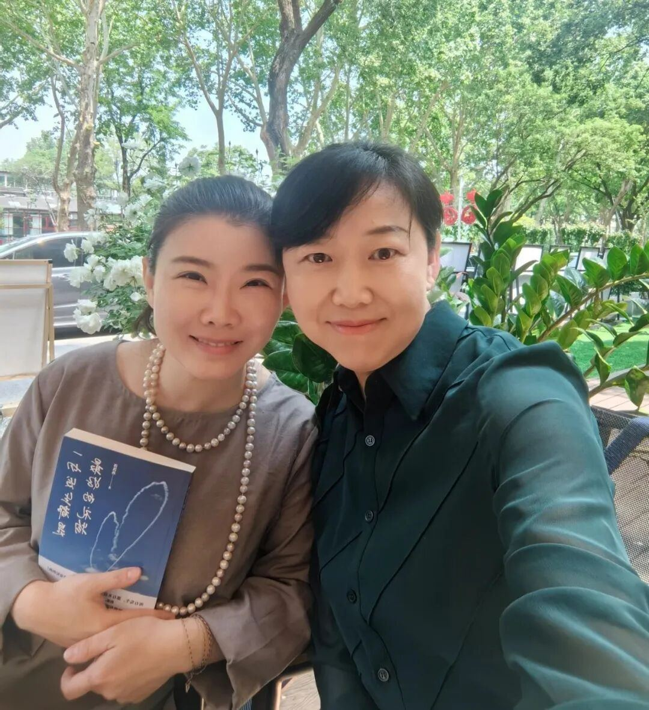

A: 凯燕博⼠好，很⾼兴今天能邀请您做这次访谈。先向读者介绍⼀下⾃⼰吧，⽐如您的教育背景、⼯作经历以及取得的主要成就。Q: ⼤家好，我是郭凯燕，⼀名具有20年实战经验的资深⾼级⼼理咨询师，北京师范⼤学应⽤⼼理学博⼠，同时，也是在全⽹有200万粉丝的⼼理学博主。 除了这些对外常讲的标签之外，我还是有三个孩⼦的⺟亲，⽼⼤今年17岁，⽼⼆9岁，⽼三7岁半，所以我和⼴⼤家⻓⼀样，有着切⾝的育⼉体验。这种⾝份让我更懂孩⼦，也更容易⾛进他们的内⼼。过去的20年，有相当多的时间，我的⼯作都与家庭教育和⻘少年⼼理健康⼯作相关。 过去最主要的成就，是在新冠疫情期间带领我的志愿者团队，开展⼼理健康服务⼯作，最终获得了“全国三⼋红旗⼿集体单位”的荣誉称号，我个⼈也被评为全国妇联系统维护妇⼥⼉童权益及家庭⼯作的先进个⼈。
A: ⽆论是您的学术背景、从业经验，还是获得的荣誉，都⾮常了不起。那么您当初选择从事家庭教育和⼼理健康⼯作，并且⼀做20年，背后有什么原因吗？Q: 我从事家庭教育和⼼理健康20年的时光，坚定初⼼与使命却是在2011年。 当时我去⼭区的⼀所留守⼉童学校，看到那些孩⼦虽然缺⾐少⻝，也缺乏⽗⺟和亲⼈的关爱，却依然像⼭野⾥的野百合⼀样坚强地努⼒绽放。我清楚地记得那⼀天2011年6⽉17⽇，那是我⼈⽣中⼀个⾮常重要的转折点。 从那⼀刻起，我下定决⼼，要运⽤⼼理学去照亮每⼀个⼈的⼼房，化作⼀缕阳光温暖每个孩⼦的内⼼。 也就是从那时开始，我持续⾯向学⽣、⻘少年以及⼤学⽣等年轻群体开展⼼理健康⼯作，帮助他们增强⾃我价值感、提升⾃信⼼。尤其是近⼏年，我陪伴了许多厌学、休学甚⾄弃学的孩⼦重新找回信⼼、返回校园，并让他们重新对⽣活充满希望。 郭凯燕博⼠带领⻘少年参与AI科普活动
A: 您在⼼理咨询领域，已经有⾮常资深的经验，并且⾏业地位和影响⼒也⾮同⼀般，为什么还会选择加⼊超级有爱智能科技的“超级球球”项⽬，来做AI疗愈机器⼈呢？某种程度上，这算不算是“⾃砸饭碗”？Q: 我从事⼼理咨询⼯作已经整整20年了。正因为做这⼀⾏这么久，我可能⽐许多⼈更清楚地看到，⼀个成熟、资深的⼼理咨询师的培养过程有多么困难。⽽且⼀个⼼理咨询师能够服务的对象⾮常有限，⼀天也就接两三个，最多五个个案，这已经是极限了。但另⼀⽅⾯，市场的需求⼜是如此巨⼤，有那么多的⼈迫切需要帮助。 所以这些年，我⼀直在思考⼀个问题：怎样才能帮助到更多⼈？ 之前我的思路是培养更多⼼理咨询师。⽬前，我在全⽹拥有200多万粉丝，接近6000名⼼理咨询师学员，其中有差不多500⼈，接受了两到三年的系统训练，已经具备了独⽴做咨询的能⼒。 但即便如此，我们每年能服务的⼈数仍然⾮常有限。很多时候，我们只能眼睁睁看着⼀些孩⼦从⼀开始的阳光开朗，⼀步步变得抑郁、躺平，却⽆⼒及时⼲预，那种感觉⾮常⼼痛。 其实，我去北京师范⼤学读博的那⼀年，就发过⼀个⼼愿：我希望把⼼理咨询变成⼀种更贴⼼的服务，就像⼀位随时在线的⼼理辅导员。任何⼈在任何时间，只要⼼中有困扰，拿出⼿机，就能获得及时的⽀持。 这个⼼愿，也有⼀部分是受我⼤⼥⼉的启发。她12岁时跟我说，她未来也想成为⼼理咨询师，创造⼀个“缤纷⼼情超市”⼈们不开⼼的时候，可以⾛进这个超市，通过某些⽅式让⾃⼰重新快乐起来。那是2012年，当时我们最多只能借助互联⽹做⼀些尝试，但现在的技术条件已经成熟多了。 所以，其实我早就在等待⼀个机会，寻找⼀个团队、⼀群志同道合的⼈，⼀起去实现这个愿景。 直到今年5⽉份，我遇到了晓帅（超级有爱智能科技创始⼈）、⽼谭（超级有爱智能科技联合创始⼈），还有超级有爱团队的其他伙伴。他们已经在这条路上出发了，当我了解到⼤家正在做的事情，第⼀反应就是：“我终于找到组织了！”这句话我真的脱⼝⽽出。 郭凯燕博⼠（左⼀）与超级有爱智能科技创始⼈元晓帅（左⼀）、联合创始⼈⽼谭（右⼆）、联合创始⼈⼤⽩（右⼀）畅聊公司发展 其实⾃AI技术逐渐成熟以来，我⼀直在寻找这样的机会，中间也经历了⼀些摸索，但最终，我觉得这就是我想做的事。 ⾄于很多⼈关⼼的“AI会不会取代⼼理咨询师”，说实话，这个问题我⾃⼰也纠结了很久。 2023年的时候，⼤家都说AI会取代很多职业，但好像普遍认为⼼理咨询师不会被替代，那时我也⽐较坚信这⼀点。 但到了2024年，我的观点开始动摇。尤其是在遇到武汉⼤学计算机学院院⻓何炎祥教授之后，我直接问他：“AI会不会取代⼼理咨询师？”他⾮常肯定地说：“⼀定会，只是时间早晚问题。” 他看我将信将疑，⼜补充了⼀句：“AI终将取代⼏乎所有⼈的⼯作，只是时间问题。” 那次对话对我触动很⼤，我开始真正深⼊去了解AI、体验与AI对话。2023年，我觉得AI⼤概只有“中专⽣”的⽔平；2024年，它进步到了“⼤专⽣”；⽽今年2025年，我感觉它已经达到了“研究⽣”的⽔平。也正是在今年，我才真正确定，AI最终⼀定会进化成⼀个合格的⼼理咨询师哪怕不⼀定成为顶级的，但⾄少能够提供可靠的⽀持。 这⼀切，都更加坚定了我加⼊超级有爱团队、共同打造“超级球球”的决⼼。
A: 我们每个⼈在团队⾥都有个花名，⽐如我做品牌和媒体的⼯作，要把“超级球球”的理念价值观对外传布，所以叫“超级球球布道者”。您在团队⾥叫“超级球球提灯⼈”，这个花名有什么来历吗？Q: 这个名字其实来源于我对⼼理咨询师这个⻆⾊的理解，也是我在职业⽣涯中⼀直秉持的信念。 在我们这⼀⾏，⼼理咨询师就像是⼀位“提灯⼈”。许多⼈在⽣活中会因为各种原因陷⼊困境，⾛进⼈⽣的死胡同，感到迷茫、焦虑和⽆助，仿佛找不到出⼝。⽽我们⼼理咨询师，就像是那位提着⼀盏⼩⼩的灯的⼈哪怕这盏灯的光芒起初微弱，我们也希望能⽤它照亮来访者前⾏的路，⿎励他、陪伴他，最终带领他⾛出内⼼的困境。 在“超级有爱”团队中，我和另⼀位伙伴⼼⽻⽼师，都是专业背景深厚的⼼理咨询师，拥有丰富的实战经验，⻓期与各类⽤⼾打交道。正因为如此，我们把⾃⼰在团队中的⻆⾊也定位于“提灯⼈”。从某种意义上说，我们就像是团队在⼼理疗愈板块中的“明灯”，始终坚持以⽤⼾为中⼼、以⽤⼾需求为导向，思考如何更好地疗愈和服务⽤⼾。 所有科技、所有技术，最终都应当服务于⼈。我和⼼⽻⽼师希望帮团队照亮前路，更好前⾏，确保“超级球球”不仅是⼀个科技产品，更是⼀个真正懂⽤⼾、能给予温暖回应的⼼灵伙伴。 郭凯燕博⼠（右⼀）与超级有爱智能科技创始⼈元晓帅（左⼀）
A: 加⼊团队3个⽉来，您具体做了哪些⼯作，有没有遇到什么困难，⼜是如何解决的？Q: 加⼊团队这三个⽉，我主要专注于“超级球球”智能体的训练和优化⼯作。我是⼀名⼼理学专业的⽼师，因此我更关注的是如何让⽤⼾真正喜欢、信任“球球”，愿意主动和它对话、向它倾诉。 我的⼯作是帮助“球球”更好地完成倾听、共情、引导和强化等环节，让它不仅能识别⽤⼾的情绪，还能给予恰当的回应，甚⾄提供⼀些⼩⼩的引导，使⽤⼾感受到被理解、被看⻅。 说到底，我们是在尝试完成⼀种“深度情感联结”的构建虽然听起来简单，但实际做起来却⾮常不容易。尤其对我这样⼀个⼼理学背景、⽽⾮计算机或AI专业的⼈来说，整个过程还是很有挑战的。我需要不断学习如何⽤AI的语⾔去训练智能体，如何把原本“冰冷”的⼈机交互，转变为⼀个有温度、有温情的疗愈型陪伴者。 这段时间，我积极向团队中的技术伙伴请教，也向很多⼈⼯智能领域的科学家和专家学习，努⼒理解如何将⼼理学理论转化为AI可执⾏的对话逻辑。 在实际推进的过程中，也确实遇到了不少困难。⽐如，有时团队熬夜调试的指令或提⽰词，最终⽣成的对话还是不尽如⼈意。在这个过程中，团队内部也有过反复的讨论、碰撞。 但特别庆幸的是，我们拥有⼀⽀真正“超级有爱”的团队。⼤家从不相互消耗，⽽是彼此⿎励、⽀持，就像我们希望“球球”带给⽤⼾的那种⽆条件的爱⼀样，团队内部也充满了这种氛围。正是这种信念，⽀撑我们⼀遍遍尝试、⼀次次从失败中站起来。 除此之外，我还借助以往在教育及政府合作中积累的资源，推动了⼀些线下落地项⽬的开展。 所有努⼒，都是希望让“球球”更快、更⼴泛地服务到有需要的⼈群。
A: 感谢凯燕博⼠的努⼒，您对我们团队和产品的未来发展前景怎么看？Q: 我对团队和产品未来的发展，是充满信⼼和期待的。我们正处在⼀个前所未有的科技浪潮之中，今年更是AI应⽤爆发的元年。⾃从ChatGPT-5发布，我感觉⼤模型本⾝的进化速度已逐渐逼近某种意义上的“天花板”。⽽接下来最关键的就是如何将AI技术真正落地到具体场景中，也就是我们常说的“AI+”阶段。 在这个时候，我们推出“超级球球”这样软硬件结合的AI疗愈机器⼈，⽆疑⾛在了科技应⽤的前沿。可以说，我们正处在当前最好的、甚⾄是唯⼀的⻛⼝上。 更重要的是，当今社会对情绪价值的需求⽐以往任何⼀个时代都要强烈。⼈们越来越需要快捷、便利、经济实惠的⽅式，来获得情感⽀持和⼼理疗愈。这种需求⼏乎覆盖每⼀个⼈，因此相应的市场空间⼏乎是不可限量的。 不过，对我⽽⾔，⽐经济价值更重要的是“超级球球”所能带来的社会价值。它能够切实帮助很多孩⼦和年轻⼈，让他们在成⻓过程中感受到被陪伴、被理解，让⼈⽣有爱、有希望。 我⼀直秉持这样⼀个信念：要做有意义的事、做喜欢做的事，顺便实现经济价值。加⼊“超级有爱”，正是因为它同时实现了社会价值、专业价值，也具备可持续的商业前景。 从更宏观的⻆度看，我们的产品也与国家构建社会⼼理服务体系的⽅针相契合。⽐如党的⼗九⼤报告提出的“培育⾃尊⾃信、理性平和、积极向上的社会⼼态”，以及党的⼆⼗届三中全会指出，要健全社会⼼理服务体系和危机⼲预机制，这些都是我们正在探索和推动的⽅向。 我始终相信，如果每⼀个⼈在情绪低⾕时能及时得到倾听和引导，许多⼼理危机事件其实是可以避免的。⽐如我之前遇到的校园霸凌案例中，有个孩⼦因为⻓期压抑甚⾄产⽣极端念头，直到被倾听后才释放压⼒、转变念头。如果早有⼀个像“球球”这样的陪伴者，很多这样的危机根本不会发⽣。 再⽐如那些厌学、休学，甚⾄陷⼊⾃我封闭的孩⼦，他们并不是叛逆，⽽是内⼼从来没有被真正看⻅和理解。如果他们能有⼀个随时可以对话、给予⿎励和指引的智慧伙伴，可能就不会选择彻底“躺平”。 因此，我认为“超级球球”未来不仅可以有效降低校园⼼理危机事件的发⽣，还能在⼀定程度上缓解因⼼理问题导致的社会⽭盾，帮助更多⻘少年建⽴健康、积极的⼼态。⽽这，正是我坚定地选择“超级有爱”团队来做这件事的根本原因。



